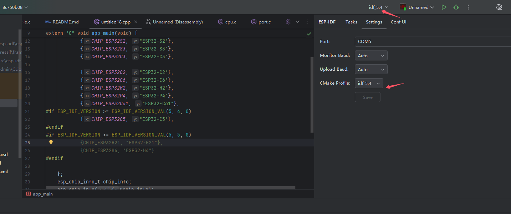
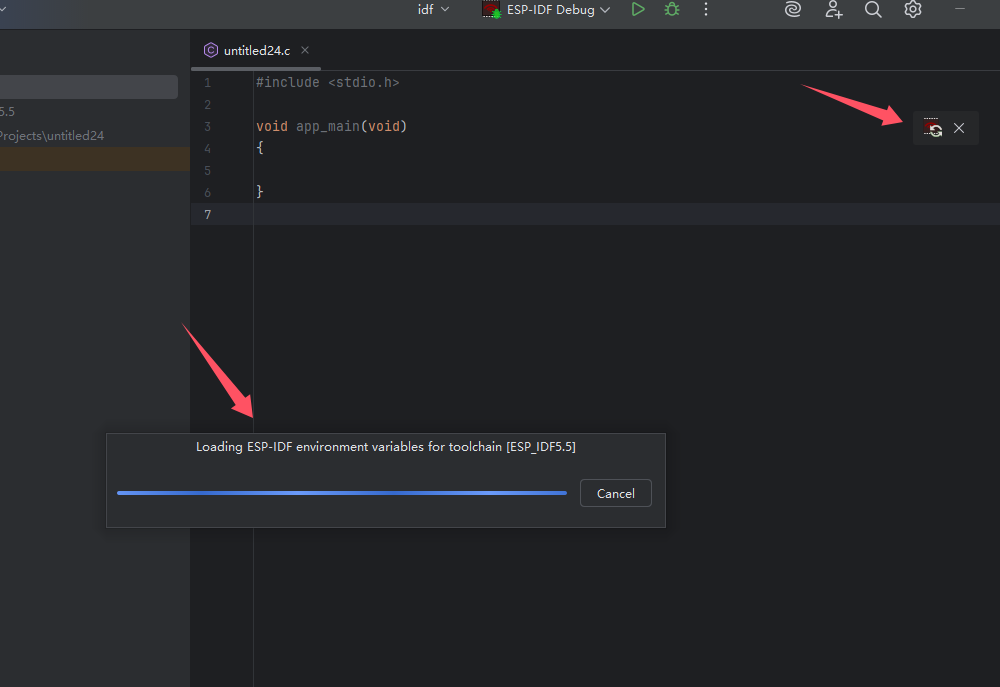
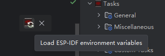
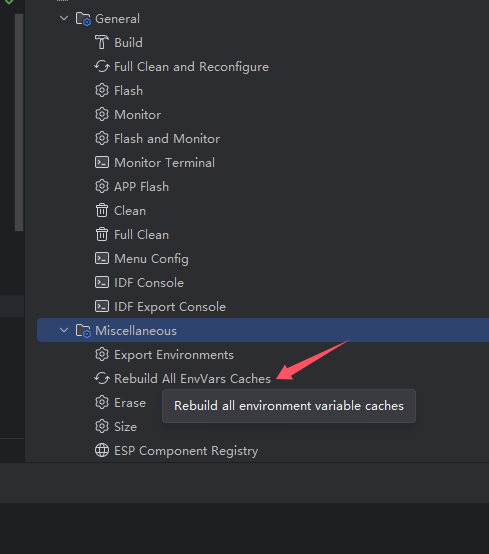

Profile
Clion本身支持多profile配置。 我们可以在一个项目中使用多个配置项构建 不同Toolchain不同cache变量配置的结果。 这里我们可以使用多个Profile配置构建出不同的固件，可以是不同的芯片类型。
这里需要多个输出目录，而sdkconfig大部分情况下也是需要分离的。
这里有个简单多芯片构建的场景

复制一份Profile 将添加cmake 指定sdkconfig和target
并指定cmake build输出目录
应用成功后会两个Profile在cmake工具窗各自产生一个cmake配置任务，并在在本插件的设置界面，CMake Profile下拉选项中出现。

切换cmake profile
兼顾多个Profile的任务树操作，可以在设置界面进行切换，任务操作的Profile,在实际执行idf.py时 build目录会被指定。

0.7版本开始，从settings页面切换Profile,会激活当前Profile影响代码的索引。如果当前运行配置选中项目为的为CMake App运行项和ESP_IDF debug运行项，这个时候，从settings页面切换Profile 运行项自身的Profile也会跟随变化，然后代码跳转路径和宏分支也会随着Profile切换而发生切换。

限制 (0.7开始后限制解除)
单一环境变量缓存 当前插件的环境变量为单一缓存，也就是说如果使用多个不同的Toolchain配置了多个Profile 也只会有一份环境变量缓存。 不建议在使用多个版本的IDF构建同一个项目时，依赖本插件的任务树操作其他与第一个Profile不同的Toolchain的Profile对应的任务。
未区分非IDF ToolChian的Profile 例如添加了gtest情况下使用了编译机的Toolchain或者远程Toolchain wsl等并非IDF Toolchain 这里未做过滤，并且操作也无意义

构建环境变量
本节基于0.7
在clion启动过程时打开上一次项目为idf项目，便比较容易以下内容。

加载环境变量的任务，和一个悬浮提示工具栏
单独运行加载环境变量任务实际上会比较快，不会出现模态窗进度条,打开clion加载较慢，可能和clion启动时，触发项目打开加载环境变量任务并无法得到太多调度有关。
悬浮提示工具栏
在新增Profile时，如果新的Profile依然选择了idf的Toolchain，同时又是不同的路径的idf的export脚本，或者修改已使用的idf的Toolchain的环境变量脚本，则被认为需要加载环境变量。
最常见的场景是配置多个版本的idf在同一个项目。

点击加载按钮会为变化的Toolchain加载环境变量。
重建所有Profile对应的Toolchain的环境变量
在任务树Miscellaneous->Rebuild All EnvVars Caches
